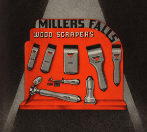

 This page serves as directory to an encyclopedic study of the Millers Falls Company, a hand tool manufacturer once located in Western Massachusetts. The site features a company history, biographies of figures associated with the business, guides to some of the its hand tools, and an illustrated list of publications it distributed. A Massachusetts-based entity until 1982, the firm was incorporated as the Millers Falls Manufacturing Company in 1868, was renamed the Millers Falls Company in 1872, and became a division of Ingersoll-Rand in 1962. The business relocated to New Jersey in 1982 following a leveraged buyout organized by Ray Sponsler, an Ingersoll-Rand executive.
The new ownership changed the name to the Millers Falls Tool Company. Ohio Tool Systems bought the operation in 1994 and four years later sold it to the Lutz File and Tool Company, the manufacturers of Gorilla Glue. Lutz allowed the Millers Falls trademark to expire in 2006, and the Hangzhou Great Star Industrial Co., Ltd, of Hangzhou, China re-registered it in 2009.
The Millers Falls pages at oldtoolheaven.com focus on the pre-1982 company and include information on a number of businesses that were either absorbed by the Millers Falls Falls Company or affiliated with it in some way. Notable among these are the Goodell-Pratt Company; the Langdon Mitre Box Company; Gunn, Amidon & Company; and the various enterprises of Charles H. Amidon and Quimby S. Backus. The tools manufactured by these firms were of excellent quality, and like Millers Falls products, are prized by collectors of antique tools and woodworkers alike.
Although the company's hand-powered woodworking tools are emphasized here, the firm manufactured and distributed precision tools, mechanics' tools and power tools as well. The site's emphasis on hand planes, bit braces, drills, miter boxes, screwdrivers and the like can be deceiving. Those using these pages should be aware that for the last forty to fifty years of its existence, the operation was dependent on the success of its electric tools.
The product of over two decades of research, the site is revised as new information comes to light. The author, Randy Roeder, worked as an academic librarian for thirty-five years and has written a half dozen tool-related articles for the Gristmill, the journal of the Mid-West Tool Collectors Association. He continues to research the Millers Falls Company, its predecessors and the businesses related to it.